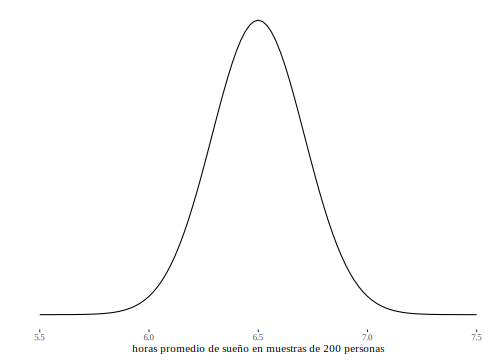
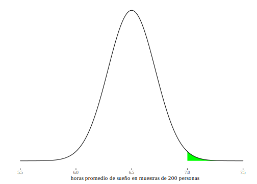
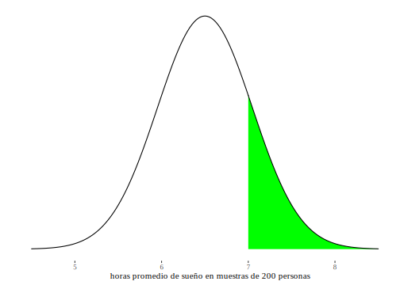
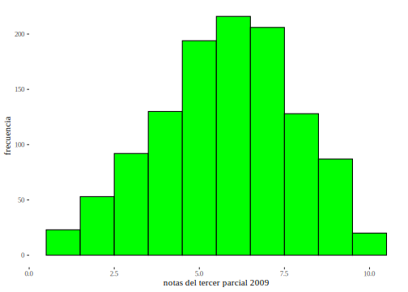
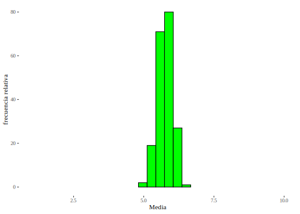
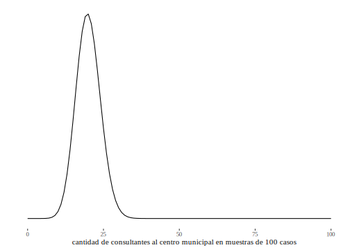
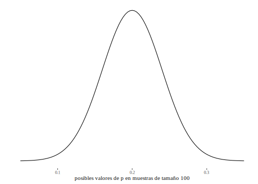
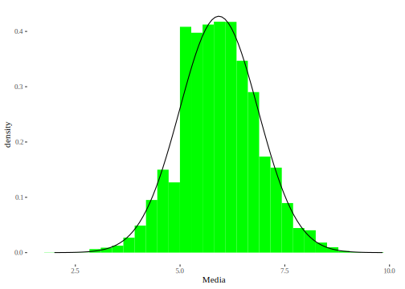
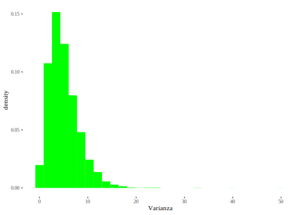

Capítulo 9 Distribuciones en el muestreo
En este capítulo se ligan los conceptos de muestreo y de probabilidad para establecer las bases de los procedimientos de inferencia estadística. La parte III tratará con datos que provienen de muestras probabilísticas, es decir, unidades de análisis que habrán sido seleccionadas usando alguno de los procedimientos de muestreo probabilístico. En consecuencia, las medidas que se calculen a partir de esos datos dependerán del azar52.
9.1 Variabilidad muestral
El concepto que desarrollamos en este capítulo es el de variabilidad muestral. La idea central es que cuando se extraen muestras aleatorias de una población, los resultados que se obtienen en esas muestras, son aleatorios. Dos ejemplos de ello:
- Según el Estadísticas Universitarias (2015), el conjunto completo de estudiantes de Psicología en 2014 tenía una edad promedio de 26.8 años. Si ese año se hubiese extraído una muestra aleatoria de tamaño 20, la edad promedio podría haber sido un número muy diferente de 26.8 años. Una posible muestra es la que tiene a 20 estudiantes muy jóvenes, por lo que la edad promedio de esa muestra va a ser menos de 26.8. Otra muestra podría tener estudiantes de más edad, por lo que promedio de esa muestra sería superior al de la población completa.
- En las elecciones a gobernador de 2019 en la provincia de Córdoba, el partido que ganó, obtuvo 57% de los votos. Si se selecciona aleatoriamente una muestra de 50 personas que hayan votado ese año, el porcentaje de quienes optaron por ese partido pordría ser diferente a 57%. Alguna muestra podría dar cero, es decir no contener a ningún votante de ese partido; y otra dar 100%, que todos lo hayan votado.
Recordemos que los casos que “cayeron” en la muestra provienen de un proceso de selección aleatoria, no podemos asegurar que la variable que estamos estudiando se asemeje en la muestra al valor que tiene en la población. Por eso, el resultado que obtengamos en la muestra depende del azar: se trata de una variable aleatoria. Tanto la media muestral, en el ejemplo de las edades de estudiantes, como la proporción muestral, en el ejemplo de las elecciones, son medidas calculadas sobre los valores obtenidos en muestras aleatorias, son variables aleatorias, sus valores dependen de cuáles sean los casos que constituyen la muestra y esto depende del azar, que es lo que hemos pedido como requisito al procedimiento de muestreo.
Estamos entonces refiriéndonos a entidades diferentes cuando hablamos de la media poblacional y la media muestral, o cuando se distingue a la proporción muestral o poblacional. Aunque el procedimiento de cálculo sea el mismo, el valor poblacional es un valor que puede ser conocido, si hemos observado a toda la población por medio de un censo o si ya han sucedido las elecciones, o bien desconocido. Cuando hacemos estimaciones no sabemos cuánto vale la media o la proporción poblacionales, pero sí sabemos que es un número estable, fijo53. Por el contrario, la media y la proporción muestrales - porque dependen de los casos que hayan sido aleatoriamente seleccionados para constituir la muestra- dependen finalmente del azar, por eso son variables aleatorias.
Las medidas que se refieren a la población se denominan parámetros también llamados parámetros poblacionales, para acentuar que se trata de la población. Por ejemplo, el valor de 26,8 años que mencionamos más arriba es la media paramétrica o también media poblacional, porque fue calculada sobre el conjunto completo de estudiantes de Psicología (publicado en el anuario de la UNC). El 57% de votos que obtuvo el partido ganador en Córdoba es la proporción paramétrica, porque proviene del recuento de todos los votos emitidos. Además de la media y la proporción, en los capítulos siguientes es harán estimaciones de la varianza, la desviación estándar, y de coeficientes de correlación (Pearson, Spearman). Todas las medidas que hemos mencionado hasta aquí pueden calcularse sobre la población completa si se hace un relevamiento completo (censo, elecciones), o bien sobre una muestra que debe ser aleatoria si se quiere luego hacer inferencias. En todos los casos que se trate de medidas que se refieran a la población completa, las llamaremos paramétricas. Solo podrían ser conocidas en aquellos casos en que la población íntegra fuera observada, es decir, si se hiciera un relevamiento exhaustivo; allí no hay inferencia.
Por eso, lo que interesa en estadística inferencial son las situaciones en que no conocemos los parámetros de una población, porque entonces deberemos estimarlos desde la muestra. Diremos que buscamos estimar diferentes parámetros. Ese es el tema que tratará el próximo capítulo: “Estimación de Parámetros”. También puede suceder que haya algún valor hipotético para un parámetro, al que necesitemos poner a prueba. En ese caso usaremos los datos de la muestra para probar una hipótesis, de eso trata un amplio campo que trataremos más adelante llamado “Pruebas de Hipótesis”.
Las medidas calculadas sobre los datos de la muestra se denominan estadísticos también llamadas estadísticos muestrales, nuevamente para acentuar de dónde provienen. Hablaremos entonces de la media muestral, la proporción, la varianza o el coeficiente de correlación muestral. Los valores que de ellos obtengamos en la muestra permitirán estimar los correspondientes valores paramétricos. Por eso decimos que la media muestral es el estimador de la media poblacional y del mismo modo con la proporción, la varianza, la desviación estándar o los coeficientes de correlación. La media muestral es el promedio de la variable (cuantitativa) que se observa en la muestra de \(n\) casos seleccionados. Para calcular la proporción, se debe contar con una variable categórica (o categorizada) y seleccionar las categorías de interés, los que hemos llamado éxitos en la distribución binomial. Si se trata de varones y mujeres, puede elegirse la proporción de mujeres, si se hizo una encuesta de valores, puede estimarse la proporción de personas con ideología autoritaria, o con inclinaciones progresistas, o de religión católica,etc. La proporción es como sabemos, el cociente entre los casos que resultan en la categoría de interés y la cantidad total de casos, o sea, su frecuencia relativa.
Para distinguir entre las medidas calculadas sobre toda la población y las de la muestra usaremos diferentes símbolos. De manera general, las letras latinas se usarán para identificar medidas descriptivas obtenidas sobre datos muestrales, mientras que usaremos letras griegas para referirnos a los valores de la población. Pero esto no es siempre así, por razones de tradición en el uso, en el caso de la proporción se distingue la poblacional de la muestral usando P (mayúscula) para la primera y p (minúscula) para la segunda54. La siguiente es la notación que usamos y la correspondencia entre valores poblacionales y muestrales.
| En la población | En la muestra | |
|---|---|---|
| Cantidad de casos | \(N\) | \(n\) |
| Media | \(\mu\) | \(\overline{x}\) |
| (mu) | ||
| Proporción | \(P\) | \(\widehat{p}\) |
| Varianza | \(\sigma^{2}\) | \(s^2\) |
| (sigma cuadrado) | ||
| Desviación Standard | \(\sigma\) | \(s\) |
| (sigma) | ||
| Diferencia de medias | \(\mu_{1} - \mu_{2}\) | \({\overline{x}}_{1} - {\overline{x}}_{2}\) |
| Diferencia de proporciones | \(P_{1} - P_{2}\) | \({\widehat{p}}_{1} - {\widehat{p}}_{2}\) |
| Cociente de varianzas | \(\frac{\sigma_{1}^{2}}{\sigma_{2}^{2}}\) | \(\frac{s_{1}^{2}}{s_{2}^{2}}\) |
| Coeficiente de correlación de Pearson | \(\rho\) | \(r\) |
| (rho) | ||
| Coeficiente de correlación de Spearman | \(\rho_{s}\) | \(r_s\) |
| (rho ese) | ||
| Pendiente de la recta de regresión | \(\beta_{1}\) | \(b_1\) |
| (beta uno) | ||
| Ordenada al origen de la recta de regresión | \(\beta_{0}\) | \(b_0\) |
| (beta cero) |
Las operaciones que se realizan para calcular los estadísticos que hemos tratado hasta aquí son las mismas que para los parámetros, solo difieren los nombres de cada elemento. Así, para calcular µ debemos hacer como con \(\overline{x}\); sumar todos los valores y dividir por el total de casos, pero en lugar de:
\[\overline{x} = \frac{\sum_{i = 1}^{n}{x_{i}*f_{i}}}{n}\]
Escribiremos:
\[\mu = \frac{\sum_{i = 1}^{N}{x_{i}*f_{i}}}{N}\]
Que solo difiere en el nombre de la media y la cantidad de casos.
Para la proporción, llamamos \(x\) a la cantidad de casos que se encuentran en la categoría de interés (la cantidad de éxitos):
\[\widehat{p} = \frac{x}{n}\]
Mientras que en la población, si \(X\) es la cantidad de éxitos:
\[P = \frac{X}{N}\]
Una excepción a esto es la varianza, porque el modo de calcularla es levemente distinto si se trabaja con datos muestrales o poblacionales. Cuando es calculada sobre los elementos de la muestra, recordemos que la varianza muestral es:
\[s^{2} = \frac{\sum_{i = 1}^{n}{{(x}_{i} - \overline{x})}^{2}}{n - 1}\]
Pero cuando la varianza se calcula sobre los elementos de la población, su cálculo se realiza con la expresión:
\[\sigma^{2} = \frac{\sum_{i = 1}^{N}{{(x}_{i} - \mu)}^{2}}{N}\]
En esta última expresión cambiaron los nombres de los elementos con los que se opera (\(\mu\) en lugar de \(\overline{x}\), \(N\) en lugar de \(n\)), y además se ha eliminado el \(-1\) del denominador. Ya no es el total de casos menos uno, sino el total de casos. El origen de esto es que esta última expresión (con denominador \(N\)) es la definición original de la varianza, mientras que la que usada en la muestra (\(s^2\) con denominador \(n-1\)) es una corrección, que se hace para que sea un buen estimador de la varianza poblacional.55
Así, la característica poblacional que pretende conocerse se llama parámetro y a través del proceso de muestreo se seleccionan algunas unidades del universo que actuarán como representantes de la población completa. Esta muestra será toda la información disponible para realizar estimaciones acerca de los parámetros poblacionales. Los valores calculados sobre los datos muestrales son los que se utilizarán para realizar aproximaciones a los valores poblacionales; tales valores son denominados estimadores puntuales, o simplemente estimadores.
De una población se pueden obtener un número muy grande de muestras, dependiendo de su tamaño y del universo de donde se extraen, pero en un proceso de muestreo se toma una sola muestra de todas las posibles. Dado que las muestras se extraen al azar, cada una de ellas proveerá de una estimación diferente del parámetro. Para un parámetro elegido, habrá tantos valores estimados como muestras puedan extraerse de la población (con algunos resultados repetidos). Esta variación (casi) impredecible de los estimadores, hace que se comporten como variables aleatorias.
Es posible (aunque esperamos que sea poco probable) que el estimador se aleje notablemente del valor poblacional al que se pretende estimar. Así, si se busca estimar la edad promedio de estudiantes de cierta carrera universitaria y no se cuenta con un registro de ellos, puede usarse una estimación a partir de una muestra. El promedio calculado sobre esos datos se tomará como estimación de la edad del conjunto completo; pero puede ocurrir que la muestra contenga, por azar, al grupo de mayor edad de toda la población, con lo cual el resultado así obtenido será una sobreestimación del verdadero valor poblacional. En un sondeo de opinión preelectoral, suponiendo que la verdadera proporción de personas que votaría a un partido es 45%, puede suceder que, de las muchas muestras, alguna de ellas se aleje tanto del 45% como que en ella, la intención de voto llegue a 65%. Por tratarse de una muestra, es un resultado posible, pero veremos que es poco probable. Debe destacarse que estos hechos (que los valores muestrales se alejen mucho de los poblacionales) resultan completamente inadvertidos para el investigador. Con respecto a la ocurrencia de estos eventos que conducen a resultados engañosos, sólo será posible -bajo ciertas condiciones-, calcular sus probabilidades.
9.1.1 Dos aspectos importantes para recordar cuando se usan muestras:
La variabilidad de las muestras: las muestras difieren entre sí. Varias muestras extraídas de la misma población dan resultados diferentes.
La representatividad de la muestra: No indica la similitud entre la muestra y la población, sino su obtención por un procedimiento adecuado que permita estimar valores de la población a partir de lo que se halle en la muestra.
9.2 Características de los estimadores
Se describen tres propiedades de los estimadores, que se requieren para poder hacer inerencias de buena calidad: insesganilidad, consistencia y eficiencia.
9.2.1 Insesgabilidad
Si fuera posible extraer todas las muestras de una población, se contaría con todos los estimadores de un parámetro dado. Cuando el promedio de todos los valores obtenidos en todas las muestras de un determinado tamaño para cierto parámetro es igual al valor de esa característica en la población, se dice que el estimador muestral es insesgado. Se denomina sesgo de un estimador a la diferencia entre el promedio que alcanzaría sobre todas las muestras posibles y el verdadero valor del parámetro poblacional. En el caso de un estimador insesgado esta diferencia es igual a cero (sin sesgo).
9.2.2 Consistencia
Intuitivamente puede pensarse que el aumento en el tamaño de la muestra
(número de elementos que la componen) mejora la calidad de la
estimación. Esta característica, que se cumple para algunos estimadores,
es denominada consistencia. Un aumento en el tamaño de la muestra no
garantiza que se obtendrán resultados más próximos a los valores
poblacionales: por grande que sea la muestra no resulta imposible que a
ella pertenezcan los valores más extremos de la población.
Veamos esto
con un ejemplo. Supongamos que se quiere estimar la calificación
promedio con que se termina una carrera dada y que se toma
una muestra de 30 personas que han egresado. Puede ocurrir que la muestra (por azar)
contenga a los treinta mejores promedios de la carrera, con lo que se
obtendría una sobreestimación del verdadero promedio de toda la
población. El concepto de consistencia expresa que si la muestra, en
lugar de 30 elementos, contiene 100, la probabilidad de obtener una
sobreestimación igualmente extrema es menor. Intuitivamente podemos ver
que resulta más factible encontrar a los 30 mejores que a los 100
mejores.
No debe entenderse que el estimador alcance valores más próximos a los paramétricos a medida que la muestra aumenta de tamaño, sino que disminuye la probabilidad de obtener resultados muy lejos de los paramétricos a medida que la muestra crece. Esta idea parece un poco abstracta ahora, se aclarará cuando la usemos en casos aplicados.
9.2.3 Eficiencia
Esta es una característica relativa, es decir que sirve para comparar estimadores. La eficiencia será mayor cuanto más pequeña sea la varianza del estimador. Por ejemplo, la media es un estimador más eficiente que la mediana porque, extraídas en todas las muestras posibles de un tamaño dado, la varianza de las medias es menor que la de las medianas.
9.3 Distribuciones de probabilidad de los estimadores
Una vez acordados los elementos con los que trabajaremos en este capítulo, debemos volver sobre el problema del carácter aleatorio de los estimadores (los estadísticos muestrales). Como variables aleatorias que son, tienen distribuciones de probabilidad asociadas y eso es lo que permite calcular la probabilidad de ocurrencia de sus diferentes valores. Conocer las distribuciones de probabilidad de los estadísticos muestrales sirve para ponerlos en relación con los parámetros a los que estiman: se usarán las distribuciones de probabilidad ya mencionadas para relacionar los estimadores (conocidos) con los parámetros (desconocidos). A fin de presentar el tema, haremos “como si” se conocieran los valores poblacionales, y veremos qué sucede con los estimadores.
9.3.1 Primera aproximación
El problema de las distribuciones muestrales se presenta aquí a través de un ejemplo que trata sobre una muy pequeña población ficticia. Supongamos que sea la población de tres pacientes de un hospital psiquiátrico del que son su única población en internación56. Llamaremos A, B y C a quienes componen esta población y consideraremos dos variables: el tiempo que llevan desde su ingreso (expresado en meses) y el sexo. La primera variable es cuantitativa, la segunda cualitativa. La siguiente es la matriz de datos para esta población ficticia y las variables indicadas.
| Caso | Paciente | Meses desde el ingreso | Sexo |
|---|---|---|---|
| 1 | A | 3 | Varón |
| 2 | B | 4 | Mujer |
| 3 | C | 5 | Varón |
Para describir esta población mostramos su (elemental) distribución de frecuencia e indicaremos la media y la varianza de la variable cuantitativa (meses desde el ingreso):
| \(x\) | \(f\) |
|---|---|
| 3 | 1 |
| 4 | 1 |
| 5 | 1 |
| Total (\(N\)) | 3 |
\[\mu = \frac{3 + 4 + 5}{3} = 4\]
\[\sigma^{2} = \frac{3 - 4^{2} + 4 - 4^{2} + 5 - 4^{2}}{3} = \frac{2}{3} = 0.67\]
Además, calcularemos -también sobre datos de la población completa- la proporción de mujeres57, codificando como \(1\) la presencia de un “éxito” y \(0\) su ausencia:
\[P = \frac{0 + 1 + 0}{3} = \frac{1}{3} = 0.33\]
Estos valores (\(\mu\), \(\sigma^{2}\) y \(P\))$ son los que llamamos parámetros y caracterizan a las dos variables para la población completa.
Ahora veremos qué sucede cuando se muestrea. Para ello vamos a sacar todas las muestras posibles de tamaño dos (podrían haber sido de otro tamaño, lo elegimos para este ejemplo), y las muestras que extraigamos serán con reposición58. Así resultan las siguientes nueve muestras posibles: \(AA\), \(AB\), \(AC\), \(BA\), \(BC\), \(BB\), \(CA\), \(CB\), \(CC\). Como todas tienen la misma oportunidad, cada una tiene probabilidad \(1/9\) de ser seleccionada aleatoriamente.
En cada una de las muestras calcularemos la media del tiempo de internación (\(\overline{x}\)) y la proporción de mujeres (\(\widehat{p})\).
| Muestra | Meses de internación | \(\overline{x}\) | Cantidad de mujeres | \(\widehat{p}\) |
|---|---|---|---|---|
| AA | 3-3 | 3.0 | 0 | 0,0 |
| AB | 3-4 | 3.5 | 1 | 0.5 |
| AC | 3-5 | 4.0 | 0 | 0.0 |
| BA | 4-3 | 3.5 | 1 | 0.5 |
| BB | 4-4 | 4.0 | 2 | 1.0 |
| BC | 4-5 | 4.5 | 1 | 0.5 |
| CA | 5-3 | 4.0 | 0 | 0.0 |
| CB | 5-4 | 4.5 | 1 | 0.5 |
| CC | 5-5 | 5.0 | 0 | 0.0 |
Antes de analizar estos resultados, los organizaremos mejor, presentando las distribuciones de frecuencia de las \(\overline{x}\) y de las \(\widehat{p}\):
| \(\overline{x}\) | \(f\) | \(f'\) | \(\widehat{p}\) | \(f\) | \(f'\) |
|---|---|---|---|---|---|
| 3,0 | 1 | 0.11 | 0,0 | 4 | 0.44 |
| 3,5 | 2 | 0.22 | 0,5 | 4 | 0.44 |
| 4,0 | 3 | 0.33 | 1,0 | 1 | 0.11 |
| 4,5 | 2 | 0.22 | Total | 9 | 1.00 |
| 5,0 | 1 | 0.11 | |||
| Total | 9 | 1.00 |
9.3.2 Distribución de la media muestral
Vamos a concentrarnos inicialmente en la distribución de \(\overline{x}\). Lo primero que se observa en la tabla de distribución de frecuencias de \(\overline{x}\) es lo que significa que \(\overline{x}\) sea una variable: quiere decir que las diferentes muestras ofrecen valores diferentes de \(\overline{x}\); o bien, que el valor de \(\overline{x}\) varía dependiendo de cuál haya sido la muestra que se seleccionó al azar. En segundo lugar, estos valores no se refieren a casos individuales sino a promedios obtenidos en muestras de tamaño dos.
Si se usan las frecuencias relativas como aproximaciones a la probabilidad, leemos en la tabla que la probabilidad de obtener una muestra en la que el promedio sea de tres meses de internación es de 0.11. Expresamos estos simbólicamente así:
\[P(\overline{x} = 3 )= 0.11\]
Comparando las probabilidades de los diferentes valores de \(\overline{x}\), se puede ver que resulta más probable hallar una media de \(4\) que de \(3.5\) ó de \(3\); porque \(P(\overline{x} = 4 )= 0.33\) mientras que \(P(\overline{x} = 3) = 0.11\). Se trata de un resultado importante, porque la media de la población es \(4\), por lo que vemos que es más probable encontrar una media muestral cerca de la media poblacional que lejos de ella.
La representación gráfica de la distribución que es la figura 9.1 también nos aporta información sobre la relación entre \(\overline{x}\) y \(\mu\).
Figura 9.1: Distribución de probabilidades de \(\overline{x}\)
Se observa que \(\overline{x}\) asume valores cuya distribución es simétrica alrededor de \(4\), que es la media poblacional (\(\mu\)). Resulta interesante comparar esta distribución con la que tiene la variable original, el número de meses de internación de cada paciente, \(x\) en la figura 9.2:
Figura 9.2: Distribución de probabilidades de \(x\)
Observemos primero el nombre de los ejes:
- el gráfico 9.2, representa los valores de \(x\): los tiempos de internación de cada paciente individualmente. Son tres casos, cada uno es un paciente. Esos son los valores que se ubican en el eje horizontal, las probabilidades del eje vertical son \(P(x)\).
- el gráfico 9.1 muestra la
distribución de las \(\overline{x}\): el promedio de los tiempos de
internación de muestras de dos pacientes. Son nueve casos, cada uno es
una muestra de tamaño \(2\). Sus valores están en el eje horizontal y sus
probabilidades se indican como \(P(\overline{x})\) en el eje vertical.
Luego la forma:
- la del gráfico 9.2 es la distribución en la población, en este caso es uniforme, pero podría tener cualquier otra forma.
- Por el contrario, la del gráfico 9.1 es la distribución de las medias muestrales; es simétrica
y va a tender a tener esta forma a medida que las muestras sean de mayor tamaño, independientemente de cuál sea la distribución que la variable tenga en la población. Luego volveremos sobre esta importante
observación.
Vamos ahora a describir esta nueva variable \(\overline{x}\), a través de su esperanza y su varianza. Calculemos primero la esperanza de \(\overline{x}\), aunque, por la forma de la distribución, puede anticiparse:
\[E(\overline{x}) = 3*0.11 + 3.5*0.22 + 4*0.33 + 4.5*0.22 + 5*0.11 = 4\]
Se verifica que el valor esperado para las medias muestrales coincide con la media de la población. Este es el primer resultado que nos interesa retener de la relación entre \(\overline{x}\) y \(\mu\); la expresamos como:
\[E(\overline{x}) = \mu\]
Que puede escribirse:
\[\mu_{\overline{x}} = \mu\]
Esto implica que, si de una población se extraen todas las muestras posibles de un determinado tamaño, y en cada una de ellas se calcula la media, el promedio de esas medias muestrales coincide con la media de la población completa. Esta cualidad según la cual la esperanza del estimador es igual al parámetro, como ya hemos dicho, se llama insesgabilidad. Cuando un estimador cumple con esa condición (como sucede con \(\overline{x}\) como estimador de \(\mu\)) se dice de él que es insesgado.
| La media muestral \((\overline{x})\) es un estimador insesgado de la media poblacional (\(\mu\)). |
Ahora vamos a calcular la varianza de \(\overline{x}\):
\[V(\overline{x}) = 3 - 4^{2}*0.11 + 3.5 - 4^{2}*0.22 + 4 - 4^{2}*0.33 + 4.5 - 4^{2}*0.22 + 5 - 4^{2}*0.11 = 0.33\] Este valor no es el mismo que el de \(\sigma^{2}\), sino que es la mitad. Se trata nuevamente de un resultado que podemos generalizar y que depende del tamaño de la muestra. En el caso de este ejemplo, las muestras son de tamaño dos y por esa razón la varianza de la media muestral es la varianza poblacional dividida por dos. Si las muestras fuesen de tamaño tres, la varianza habría quedado reducida a la tercera parte. Para otro tamaño de muestra, la varianza de \(\overline{x}\) será diferente.
De modo general, la varianza de \(\overline{x}\) se relaciona con la varianza de \(x\) \({(\sigma}^{2}\)) a través de:
\[V(\overline{x}) = \frac{\sigma^{2}}{n}\]
De manera alternativa, indicamos a esta varianza como \(\sigma_{\overline{x}}^{2}\), con lo que:
\[\sigma_{\overline{x}}^{2} = \frac{\sigma^{2}}{n}\]
Esta fórmula indica que la varianza de las \(\overline{x}\) varía inversamente con el tamaño de la muestra.
Este también es un resultado muy importante: nos dice que cuanto más grande sea la muestra, tanto más pequeña será la varianza de las medias muestrales. Recordemos que la varianza mide la dispersión de los valores de una variable, por lo que esta varianza mide la dispersión entre los valores de las diferentes medias muestrales. El hecho que disminuya cuando aumenta el tamaño de la muestra significa que para muestras más grandes, las medias muestrales tendrán menos dispersión, es decir que menos probables los valores muy elejados. Esta propiedad se denomina consistencia, entonces este resultado puede expresarse indicando que la media muestral es un estimador consistente de la media poblacional, porque su varianza se reduce a medida que aumenta el tamaño de la muestra.
| La media muestral (\(\overline{x}\)) es un estimador consistente de la media poblacional (\(\mu\)). |
De la varianza surge inmediatamente la desviación estándar de \(\overline{x}\) es:
\[\sigma_{\overline{x}} = \frac{\sigma}{\sqrt{n}}\].
Es común referirse a ella como el error estándar de la media.
Este es el segundo resultado de importancia sobre la relación entre \(\overline{x}\) y \(\mu\).
En la práctica, fuera de este ejemplo simplificado, solo extraemos una muestra y en ella calculamos la media. Lo que hemos visto hasta aquí nos dice que la media muestral que se obtenga tiene más chances de estar cerca de la media poblacional cuanto más grande sea la muestra que tomemos. Esto es así porque a medida que aumenta el número de casos en la muestra (\(n\)), disminuye la varianza y en consecuencia las medias muestrales tienen más probabilidad de estar cerca de la media poblacional. Por eso, será más probable que la única media que se obtiene en la muestra sea próxima al parámetro que se estima. No es seguro que la media muestral sea cercana a la poblacional, lo que se sabe es que es menos probable que esté lejos cuando la muestra es más grande.
La tercera característica de la distribución de la media muestral se refiere a su forma. En el gráfico 9.1 se ve que las \(\overline{x}\) del ejemplo alcanzan una distribución unimodal y simétrica, sin importar que en la población la variable hubiese tenido una distribución uniforme. Este resultado también es general y es más amplio aun: a medida que aumenta el tamaño de las muestras, la distribución de las medias muestrales tiende a ser normal. La prueba de esta afirmación constituye el Teorema Central del Límite, cuyo enunciado puede resumirse como: una suma de \(n\) variables aleatorias tiende a tener distribución normal a medida que aumenta \(n\), independientemente del modo en que esté distribuida esa variable. Para nuestro uso, la media es una suma de valores de una variable aleatoria (porque esos valores provienen de una muestra aleatoria) dividida en el total de casos. Por eso el teorema nos dice que si se trata de muestras grandes, puede tratarse a \(\overline{x}\) como teniendo una distribución normal.
Anteriormente se presentó el experimento de tirar un dado dos veces, contar la suma de los puntos obtenidos y definir la variable aleatoria \(S\) que resulta de la suma de dos variables aleatorias, porque cada tirada del dado da lugar a un resultado entre 1 y 6 que depende del azar. La variable que resulta de tirar una sola vez el dado tiene distribución uniforme: todos los números tienen la misma probabilidad \(1/6\). La suma de puntos de los dos dados, \(S\), ya no tiene distribución uniforme, porque es más probable obtener \(7\) (que puede resultar de \(6+1\), \(5+2\), \(4+3\), \(3+4\), \(2+5\) ó \(1+6\)) que \(12\) (que solo puede obtenerse con \(6+6\)).
Figura 9.3: Distribución de probabilidades de la variable x = puntaje obtenido al tirar un dado
Figura 9.4: Distribución de probabilidades de S = suma de puntajes obtenidos al tirar dos veces un dado
Los gráficos 9.3 y 9.4 ilustran la diferencia.
Si bien la distribución de \(S\) no es normal, se aprecia la tendencia, “va camino a ser normal”. En este caso la muestra tiene solo dos casos (las dos tiradas del dado); cuando son más casos, la distribución va volviéndose más cercana a la normal.
Esto es lo que sucede cuando se extraen muestras de una población: la distribución de la variable en la población puede tener cualquier distribución (en el caso del dado es uniforme), pero a las medias muestrales les sucede lo mismo que a \(S\), van tendiendo a tener una distribución normal a medida que se toman muestras de mayor tamaño. Éste es el tercer resultado que necesitamos para relacionar a la media muestral con la poblacional y poder hacer las primeras inferencias.
9.3.2.1 Resumen de la relación entre la media muestral y la paramétrica:
- \(E(\overline{x})=\mu\) o \(\mu_{\overline{x}}=\mu\)
- \(V(\overline{x})=\frac{\sigma^2}{n}\)
- \(\overline{x} \rightarrow N(\mu, \frac{\sigma^2}{n})\)
La última expresión sintetiza las anteriores y agrega que la distribución de \(\overline{x}\) es normal.
Entonces, de lo anterior se lee que:
La esperanza de \(\overline{x}\) es la media de la población (insesgabilidad).
La varianza de \(\overline{x}\) es la varianza de la población dividida en el tamaño de la muestra59 (consistencia).
La media muestral tiende a tener una distribución normal con media \(\mu\) y varianza \(\frac{\sigma^{2}}{n}\), cuando el tamaño de la muestra aumenta.
9.3.2.2 Ejemplo con datos ficticios
Supongamos que en la población de personas adultas la media de horas diarias de sueño es de 6.5 hs (\(\mu = 6.5\)) con varianza de 9 \(hs^{2}\) (\(\sigma^{2} = 9\)). Si eligiéramos al azar muestras de 200 personas (\(n=200\)) y registráramos el número promedio de horas de sueño en cada muestra, encontraríamos que la distribución de esas horas promedio sería como la siguiente:

En el eje horizontal están graficados los valores de las posibles \(\overline{x}\) que resultarían si sacáramos muestras aleatorias de esa población. La distribución normal está centrada en \(6.50\), que es la media de la población. El gráfico muestra con claridad que “lo más probable” es encontrar a \(\overline{x}\) en los alrededores de \(6.50\) y que, muestras de 200 personas que promedien valores superiores a \(7\) tendrían pocas posibilidades de ser seleccionadas.
Con la media y la desviación estándar de esta variable \(\overline{x}\) podemos calcular un puntaje \(z\), lo que conocíamos como desvío estándar. Para llegar a la forma que tiene ahora \(z\), recordemos que lo definimos como el número de desviaciones estándar a las que la variable se encuentra de la media, por eso era la diferencia entre el valor de la variable y el de la media, dividida en la desviación estándar:
\[z = \frac{x - \overline{x}}{s}\]
La diferencia ahora es que nuestra variable es \(\overline{x}\), su media es \(\mu\) y su desviación estándar es el que hemos llamado error estándar de la media: \(\sigma_{\overline{x}}\). Con lo que el puntaje \(z\) asociado a cada valor de \(\overline{x}\), tiene ahora la forma:
\[z = \frac{\overline{x} - \mu}{\sigma_{\overline{x}}}\]
Si se reemplaza el error estándar de la media por su valor, se obtiene:
\[z = \frac{\overline{x} - \mu}{\frac{\sigma}{\sqrt{n}}}\]
Si ahora nos preguntamos por la probabilidad de encontrar muestras de 200 personas cuyos promedios de horas de sueño superen las 7 horas, la representación gráfica será:

Y el valor de esa probabilidad se calcula observando a cuántas desviaciones estándar se encuentra de la media, es decir, calculando el puntaje \(z\) correspondiente a la media de 7 horas:
\[z = \frac{7 - 6.5}{\frac{3}{\sqrt{200}}} = \frac{0.5}{0.21} = 2.38\]
Calculamos la probabilidad de superar este valor como el complemento de la acumulada60: \(1-P(z\leq 2.38)\)
## [1] 0.008656319La lectura de este resultado es que solo el 0.9% de las muestras de tamaño 200 darán media muestral mayor a 7 horas.
Para ver el efecto del tamaño de la muestra repitamos el cálculo con muestras de 30 casos61, cuyo gráfico es:
 En el que se observa la mayor varianza de las \(\overline{x}\), debido al menor tamaño de muestra.
El puntaje \(z\) es ahora:
\[z = \frac{7 - 6.5}{\frac{3}{\sqrt{30}}} = \frac{0.5}{0.55} = 0.91\] Y la probabilidad de superarlo:
## [1] 0.1814113Es decir que el 18% de las muestras de tamaño 30 darán media que supere a 7 hs. Esto indica que cuando las muestras son de mayor tamaño es menor la probabilidad de encontrar valores en los extremos de la distribución.
Para aclarar la relación entre valores poblacionales y muestrales, supongamos que la variable horas de sueño tiene distribución normal en la población y calculemos la probabilidad de encontrar personas que duerman más de 7 horas. Antes destaquemos la diferencia entre esta pregunta y las dos anteriores: las probabilidades que calculamos antes son las de hallar muestras de 200 personas o de 30 personas con promedio superior a 7 horas de sueño, ahora preguntamos por la probabilidad de encontrar personas individuales que tengan más horas de sueño que esa cifra. El puntaje \(z\) es ahora:
\[z = \frac{7 - 6.5}{3} = \frac{0.5}{3} = 0.17\]
La fórmula cambia porque la pregunta no es por medias muestrales sino por valores individuales, por eso no hay \(n\)62. La probabilidad es ahora:
## [1] 0.4325051\[P(z > 0.17) = 0.432\]
Que leemos diciendo que el 43% de los individuos duerme 7 horas o más. Esto indica que es mucho más probable encontrar individuos que se alejen de la media, que grupos de 30 ó de 200 individuos cuyo promedio se aleje de la media. Cuando las muestras son de mayor tamaño, tanto más improbable resulta encontrarlas lejos de la media, eso es lo que está expresado cuando \(n\) aparece en el denominador de la desviación estándar: mayor \(n\) implica menor dispersión, y de ello se sigue que son menos probables los casos extremos.
9.3.2.3 Ejemplo con datos reales
Ahora trabajaremos sobre una base que contiene las notas de los tres parciales de Psicoestadística en 2009. En primer lugar damos una breve descripción de la población de las notas del tercer parcial:
## Min. 1st Qu. Median Mean 3rd Qu. Max. NA's
## 1.000 4.000 6.000 5.779 7.000 10.000 265Estas medidas están calculadas sobre la población completa, que es el total que estudiantes que en 2009 hizo alguno de los tres parciales, como se ve, de ese total, hubo 265 que no hicieron el tercero. Por ser la población completa, se trata de parámetros, así:
\[\mu = 5.779\]
\[\sigma^{2} = 4.12\]
El histograma de las notas del tercer parcial es:

Ahora extraemos 200 muestras de 80 casos cada una y producimos una nueva matriz de datos que tiene 80 filas y 200 columnas. Cada columna corresponde a una muestra, por lo que podemos solicitar la media y la varianza en cada una. No son “todas las muestras posibles de tamaño 80”, sino solo 200 por lo que tendremos una aproximación a la relación entre estimadores y parámetros. Con las medias y varianzas de cada muestra, resulta una nueva matriz de datos, que contiene una media muestral y una varianza muestral para cada una de las 200 muestras calculadas, y cuyas primeras seis filas son:
## Media Varianza
## 1 5.523077 4.253365
## 2 5.728571 4.780331
## 3 5.692308 3.747596
## 4 5.967742 3.539926
## 5 5.344262 4.229508
## 6 5.666667 4.967742Cuando solicitamos un resumen de las medias muestrales obtenemos:
## Media Varianza
## Min. :5.083 Min. :2.578
## 1st Qu.:5.594 1st Qu.:3.685
## Median :5.759 Median :4.179
## Mean :5.764 Mean :4.136
## 3rd Qu.:5.952 3rd Qu.:4.531
## Max. :6.532 Max. :6.554Este resumen se refiere a las variables que están en la matriz de datos que contiene un resultado muestral en cada fila, por eso \(n=200\) es la cantidad de muestras que se extrajeron (y no el tamaño de cada muestra), ahora cada muestra representa un caso y las variables que se consideran son la media y la varianza de la nota de los 80 casos seleccionados en cada muestra. Se aprecia que el campo de variación de la variable original (nota del tercer parcial) iba de 1 a 10, mientras que la nueva variable (promedio de notas del tercer parcial de muestras de 80 casos cada una) varía entre 5.03 y 6.54, es decir, es notablemente más restringido, tiene menos variabilidad.
El valor 5.79 es la media de todas las medias muestrales y como vemos es muy cercana a la media poblacional, como lo es la media de todas las varianzas muestrales comparada con la varianza poblacional. estos números no son idénticos, porque no se extrajeron todas las muestras, sino solo 200, pero la aproximación en adecuada. Eso quiere decir que la media y la varianza muestrales, son estimadores insesgados de la media y la varianza poblacionales.
Además, puede calcularse la varianza de las medias muestrales, que da:
## [1] 0.07254758La relación teórica de esta varianza con la varianza poblacional es: \(\sigma_{\overline{x}}^{2} = \frac{\sigma^{2}}{n}\), en la que \(n\) representa el tamaño de las muestras y no la cantidad de muestras solicitadas. Con los datos del tercer parcial es: \(\sigma_{\overline{x}}^{2} = \frac{4.12}{80} = 0.05\). El resultado que obtuvimos con nuestro muestreo es una buena aproximación a lo que prevé la teoría.
El histograma de las medias muestrales es:

En el que hemos usado la misma escala de 1 a 10 para que se vea con claridad la reducción en la dispersión de esta nueva variable.
9.3.3 Distribución de la proporción muestral
El razonamiento para llegar a la relación que hay entre el estimador \(\widehat{p}\) y el parámetro correspondiente, \(P\) es completamente análogo al de la media, por lo que no recorreremos nuevamente los mismos pasos que llevaron a establecer la relación entre \(\overline{x}\) y \(\mu\).
En primer lugar, y como sucede en el caso de la media, \(\widehat{p}\) es un estimador insesgado de \(P\).
| La proporción muestral \(\widehat{p}\) es un estimador insesgado de la proporción poblacional \(P\). |
Si extrajéramos todas las muestras posibles de una población y calculáramos en cada una la proporción de casos en una categoría de una variable, el promedio de todas esas proporciones muestrales, daría como resultado la proporción de casos que hay en esa categoría en la población. Por lo que podemos escribir que:
\[E(\widehat{p}) = P\]
O de manera equivalente:
\[\mu_{\widehat{p}} = P\]
Acerca de la dispersión que alcanzan las diferentes \(\widehat{p}\) en las muestras, hay más diferencia con la media. En efecto, cuando se trata con variables cualitativas (nominales u ordinales) no hay distancias y en consecuencia no se puede usar una desviación estándar. La dispersión de una variable de este nivel se aprecia a través de la idea de incertidumbre: habrá tanto menos dispersión cuanto mayor sea la concentración de casos en una categoría de la variable. Así, la distribución:
| partido al que votará | \(f\) |
|---|---|
| A | 0.09 |
| B | 0.74 |
| C | 0.11 |
| D | 0.06 |
| Total | 1.00 |
Tiene menos dispersión que:
| partido al que votará | \(f\) |
|---|---|
| A | 0.23 |
| B | 0.31 |
| C | 0.26 |
| D | 0.20 |
| Total | 1.00 |
Porque si tuviéramos que “adivinar” quién va a ganar las elecciones, en el primer caso estaríamos más seguros de inclinarnos por el partido B, que en el segundo. Aunque en ambas distribuciones el modo es el partido B, en la primera la concentración es mayor y menor es la incertidumbre, por lo que tenemos mayor certeza, hay menos dispersión.
Así es como hemos tratado antes el problema de la variabilidad en variables que no admiten la medición de distancias, en el capítulo. Pero en este caso, se está calculando \(\widehat{p}\) como la proporción de una categoría, sin considerar cómo se distribuyen las otras, es decir que se trabaja con variables dicotómicas. Si se considera solo al partido A, las dos tablas anteriores se reducen a:
| partido al que votará | \(f\) |
|---|---|
| A | 0.09 |
| otro partido | 0.91 |
| Total | 1.00 |
| partido al que votará | \(f\) |
|---|---|
| A | 0.23 |
| otro partido | 0.77 |
| Total | 1.00 |
¿Cuál de las dos distribuciones tiene mayor dispersión? La primera tiene una mayor concentración en la categoría “otro partido” que la segunda, por lo que tiene menor dispersión. Por eso, en variables dicotómicas, la mayor diferencia entre las dos proporciones indica la mayor concentración y por ello, la menor dispersión.
Como vimos antes, la forma operativa de evaluar esto es multiplicando las dos frecuencias relativas: \(0.09*0.91\) en el primer caso, y \(0.23*0.77\) en el segundo. Esos productos dan \(0.08\) y \(0.18\) respectivamente; estos valores son indicadores de la menor dispersión de la primera distribución.
La operación de multiplicar a la proporción de casos de una categoría por la de la otra, que se escribe como \(P*(1-P)\), es la medida de la dispersión en variables nominales, que reemplaza a la varianza de las variables cuantitativas. Como sucedió con la media, la varianza de la proporción muestral es la varianza dividida el tamaño de la muestra:
\[V\widehat{p} = \frac{P*(1 - P)}{n}\]
Como antes, muestras de mayor tamaño dan lugar a menor variabilidad. También puede expresarse la varianza de \(\widehat{p}\) como \(\sigma_{\widehat{p}}^{2}\), con lo que:
\[\sigma_{\widehat{p}}^{2} = \frac{P*(1 - P)}{n}\]
La desviación estándar de \(\widehat{p}\) será:
\[\sigma_{\widehat{p}} = \sqrt{\frac{P*(1 - P)}{n}}\]
Esta expresión también se conoce como error estándar de la proporción.
Los dos últimos resultados (la esperanza y la varianza de \(\widehat{p}\)) se derivan de la distribución que rige el experimento de extraer \(n\) observaciones y contar la cantidad de casos que allí aparecen: se trata de la distribución binomial. Como vimos, si \(\widehat{x}\) es la cantidad de casos en la categoría de interés en la muestra, entonces:
\[\widehat{p} = \frac{\widehat{x}}{n}\]
Y, en consecuencia:
\[\widehat{x} = n*\widehat{p}\]
En el modelo binomial, la esperanza y la varianza de \(x\) (cantidad de casos en la categoría de interés) son:
\[\begin{equation} \label{eq:1} E(\widehat{x}) = n*P \end{equation}\]
\[\begin{equation} \label{eq:2} V(\widehat{x}) = n*P*(1 - P) \end{equation}\]
Remplazando \(x\) por su relación con \(\widehat{p}\) y usando las propiedades de la esperanza y la varianza hallamos:
Para la esperanza de \(\widehat{p}\) en (??):
\[E(n*\widehat{p}) = n*P\]
\[n*E(\widehat{p}) = n*P\]
\[E(\widehat{p}) = P\]
Esta última igualdad muestra que, efectivamente \(\widehat{p}\) es un estimador insesgado de P.
Para la varianza de \(\widehat{p}\), reemplazamos en (??):
\[V(n*\widehat{p}) = n*P*(1 - P)\]
\[n^{2}*V(\widehat{p}) = n*P*(1 - P)\]
\[V\widehat{p} = \frac{P*(1 - P)}{n}\]
Y vemos que \(\widehat{p}\) es un estimador consistente de P, porque a medida que aumenta el tamaño de la muestra, disminuye su varianza.
Para calcular la probabilidad de diferentes valores de \(\widehat{p}\), a partir de P y de un determinado tamaño de muestra, usamos la distribución binomial, en la que cambiamos la variable \(\widehat{x}\) (número de casos en la categoría de interés) por \(\widehat{p}\) (proporción de casos en esa categoría). Así, volviendo al último ejemplo que se vio en la distribución binomial, si en la población de estudiantes de Biología la proporción de mujeres es de 0.70; allí se preguntó por la probabilidad que, en una muestra de 15, fueran todas mujeres o bien, que \(\widehat{x} = 15\) ahora puede plantearse en términos de proporciones: ¿Cuál es la probabilidad que, en una muestra de 15 estudiantes, el 100% sean mujeres? Aquí:
\[P = 0.70\]
\[n = 15\]
\[\widehat{p} = 1\]
Usando el valor de \(\widehat{p}\) y de \(n\), calculamos \(x\):
\[\widehat{x} = n*\widehat{p} = 15*1 = 15\]
Esto quiere decir que pedir que la proporción muestral (\(\widehat{p}\)) sea 1 (100%) equivale a pedir 15 éxitos (mujeres) en la muestra, por lo que la probabilidad es:
\[P(\widehat{p} = 1) = B( 15;15;0.70)\]
## [1] 0.0047Es el mismo resultado obtenido antes, ahora ubicado en el contexto del muestreo.
Si la pregunta fuera ¿Cuál es la probabilidad que, si en la población la proporción es 0.70; en una muestra de 15 observaciones ésta sea 0.40? Respondemos del mismo modo, primero calculamos \(\widehat{x}\):
\[\widehat{x} = n*\widehat{p} = 15*0.40 = 6\]
Ahora la probabilidad es:
\[P(\widehat{p} = 0.40) = B(6;15;0.70)\]
## [1] 0.0116De manera general, expresada en base a \(n\), \(\widehat{p}\) y \(P\), la probabilidad es:
\[P\widehat{p} = B(n*\widehat{p};n;P)\]
Es posible, y se hace a menudo, aproximar estas probabilidades binomiales a través de un modelo normal. El fundamento de esta aproximación es el teorema de Laplace - De Moivre que dice que si \(x\) es una variable con distribución binomial, con esperanza \(n*P\) y varianza \(n*P*(1-P)\), entonces, cuando \(n\) tiende a infinito, la distribución de \(x\) tiende a ser normal, con la misma media (esperanza) y varianza. Por la condición “\(n\) tiende a infinito”, resulta claro que esto solo es válido63 cuando \(n\) es grande y también debe cumplirse que \(P\) no está muy cerca de \(0\) ó de \(1\). La condición se solicita de manera sencilla exigiendo que \(n*P\) y \(n*(1-P)\) sean ambas mayores o iguales a 5. Si la variable sobre la que trabajamos no es \(x\) sino \(n*\widehat{p}\), entonces la esperanza y la varianza serán:
\(E(\widehat{p}) = P\) y \(V(\widehat{p}) = \frac{P*(1 - P)}{n}\).
Si la condición de \(n*p\) y \(n*(1-P)\) mayores o iguales a 5 se cumple, puede usarse esta aproximación y obtener un resultado análogo al de la media, que se resume así:
- \(\widehat{p} \rightarrow N(P, \frac{P*(1-P)}{n})\)
Si \(n\) tiende a \(\infty\) y \(n*P\) y \(n*(1-P)\) son mayores a \(5\).
9.3.3.1 Ejemplo con datos ficticios
Sea que para una localidad determinada, el 20% de la población adulta consultó al centro de salud municipal durante el año pasado. Si extraemos muestras de tamaño 100 y en cada una de ellas observamos la proporción de personas que consultaron a ese centro de salud durante el año pasado, el gráfico de la distribución binomial de la cantidad de consultantes en cada muestra será:
Este gráfico tiene un trazado continuo aunque se trata de una variable discreta. Eso se debe a que es un gran número de observaciones y la distancia entre ellas es pequeña. Cuantas más sean las observaciones, tanto más cercana a la continuidad será la sucesión de puntos.
El gráfico muestra las probabilidades asociadas a cada cantidad \(\widehat{x}\) de éxitos que pueden resultar en la muestra, y cada valor de \(\widehat{x}\) se corresponde con un valor de \(\widehat{p}\) a través de:
\[\widehat{p} = \frac{\widehat{x}}{n}\]
Por lo que el gráfico anterior puede tratarse a escala de \(\widehat{p}\)

Si nos interesamos por la probabilidad de obtener una proporción de 0.25 ó superior en la muestra, debemos transformarla a una cantidad de éxitos muestrales:
\[\widehat{x} = n*\widehat{p} = 100*0.25 = 25\]
Entonces:
\[P(\widehat{p} \geq 0.25) = P(\widehat{x} \geq 25) = B(\widehat{x} \geq 25;\ 100;0.20)\]
Al que solicitamos como complemento de la probabilidad acumulada de 24:
## [1] 0.1314\[P(\widehat{x} \geq 25;100;0.20) = 0.1314\]
Interpretamos este resultado diciendo que, si en la población completa, la proporción de personas que consultan es del 20%, la probabilidad que en una muestra de 100 personas, hayan consultado el 25% ó más es de 0.1314. En otros términos, el 13% de las muestras de tamaño 100 que se extraigan de esa población, mostrarán una proporción de 0.25 ó mayor.
Dado que el número de casos en la muestra es elevado (100) y que \(n*P\) es 20 y \(n*(1-P)\) es 80, ambos mayores a 5, podemos usar la aproximación normal. Según esa aproximación, la distribución de los diferentes valores de \(\widehat{p}\) es:

El eje horizontal de este gráfico representa todas las proporciones que pueden encontrarse en las diferentes muestras. La distribución está centrada en el parámetro \(P = 0.20\).
Resolveremos la pregunta anterior transformando el valor \(\widehat{p} \geq 0.25\) en un puntaje \(z\). Conocemos la media y la varianza de \(\widehat{p}\) por lo que haremos:
\[z = \frac{\widehat{p} - P}{\sigma_{\widehat{p}}}\]
Reemplazando por el error estándar de \(\widehat{p}\), tenemos:
\[z = \frac{\widehat{p} - P}{\sqrt{\frac{P*(1 - P)}{n}}}\]
Esta es la expresión con la que transformamos los valores de \(\widehat{p}\) a puntajes \(z\). Sin embargo es necesario hacer una corrección debido a que vamos a aproximar una distribución discreta (binomial) a través de una continua (normal)64, por lo que la expresión toma la forma:
\[z = \frac{\widehat{p} - \frac{1}{2*n} - P}{\sqrt{\frac{P*(1 - P)}{n}}} = \frac{0.25 - \frac{1}{200} - 0.20}{\sqrt{\frac{0.20*(1 - 0.20)}{100}}} = 1.125\]
Con lo que:
\[P(\widehat{p} \geq 0.25) = P(z \geq 1.125)\]
Que es el complemento de la probabilidad acumulada:
## [1] 0.1303\[P(\widehat{p} \geq 0.25) = 0.1303\]
Cuando anteriormente se usó la distribución binomial encontramos una probabilidad de 0.1314; por lo que ésta última es una buena aproximación.
A partir de los resultados encontrados en este capítulo podremos hacer estimaciones de la media y la proporción poblacionales a partir de los respectivos valores muestrales. Hemos visto entonces que el carácter aleatorio de las muestras hace que las estimaciones sean inciertas, pero que, debido a que conocemos la distribución de probabilidades de los estimadores podemos establecer qué valores de ellos son más probables, así podremos hacer el camino inverso, que es el que más nos interesa: el de alcanzar a los parámetros a partir de los estimadores.
Usando la distribución normal como aproximación a la binomial, entonces, para los dos estimadores que hemos mencionado en este capítulo se cumple la relación: \[z=\frac{E_s-P_a}{EEE}\] En que resumimos:
- \(P_a\) es el parámetro
- \(E_s\) es el estimador
- \(EEE\) el error estándar del estimador
Veremos en los próximos capítulos que esta expresión es válida para relacionar otros parámetros con sus correspondientes estimadores, mientras pueda usarse la distribución normal.
Con los contenidos vistos hasta este punto, en la expresión anterior, los componentes pueden ser:
\(P_a\): \(\mu\) ó \(P\)
\(E_s\): \(\overline{x}\) ó \(\widehat{p}\)
\(EEE\): \(\frac{\sigma}{\sqrt{n}}\) ó \(\sqrt{\frac{P*(1 - P)}{n}}\)
9.3.4 Muestras pequeñas
Las distribuciones de la media y la proporción muestral son asintóticamente modeladas por la distribución normal. Esto quiere decir que, a medida que el tamaño de las muestras crece, la distribución de estos estimadores va siendo más cercana a la curva del modelo normal. Sin embargo, cuando las muestras son pequeñas, se debe usar un modelo diferente. William Gosset (Student (1908b), Student (1908a)) desarrolló la distribución conocida como t de Student, que se adecua a describir la distribución de las medias muestrales cuando éstas provienen de muestras pequeñas. Expresado formalmente, si las muestras son pequeñas y la variable tiene distribución normal en la población, entonces:
\[\frac{\overline{x} - \mu}{\frac{s}{\sqrt{n}}}\]
Tiene distribución \(t\) con \(n - 1\) grados de libertad. En el ejemplo de las horas de sueño , si las muestras fueran de tamaño 15 en lugar de 200, se debe usar la distribución t. Así, la pregunta ¿cuál es la probabilidad que en muestras de tamaño 15, la media de horas de sueño supere las 7 horas?, se responde usando la distribución t con 14 grados de libertad.
\[P(\overline{x} > 7) = P(t_{14} > \frac{7 - 6.5}{\frac{3}{\sqrt{15}}}) = P(t_{14} > 3.87)\]
## [1] 0.00085Cuando la muestra crece, la diferencia entre los modelos normal y t, se reduce. Si se repite la operación del ejemplo de las horas de sueño, con muestras de tamaño 200, usando la distribución \(t\), resulta que:
## [1] 0.00913\[P(t_{199} > 2.38) = 0.009\]
Que es, hasta el tercer decimal, igual al que ofrece la distribución normal. A esto se refiere la idea que la distribución t converge a la normal: cuando las muestras son grandes, la distribución t da resultados muy parecidos a los de la normal. El criterio usual para decidir si corresponde usar una distribución \(t\) o una normal es de 30 casos. Sin embargo, a fin de ahorrar recursos, cuando se necesita hacer estimaciones que involucran a una u otra de esta distribuciones, los programas estadísticos usan siempre la distribución \(t\).
9.3.5 Distribución de la varianza
La media y la proporción muestrales tienen distribuciones simétricas (normal o \(t\)); por el contrario, la varianza muestral se distribuye de manera asimétrica, lo que puede ilustrarse con el ejemplo de las notas del tercer parcial. Si se solicitan 10000 muestras de tamaño 10, el siguiente es el histograma de ellas, con una curva normal superpuesta, para mostrar la calidad del ajuste:
ggplot(muestra_tercer_parcial) + geom_histogram(aes(
x = Media,
y = ..density..
), fill = "green") + stat_function(
fun = dnorm, args = list(
mean = mean(muestra_tercer_parcial$Media),
sd = sd(muestra_tercer_parcial$Media)
)
) +
theme_tufte()
Puede verse que el modelo normal “copia” razonablemente bien la distribución real de las medias muestrales, considerando que no se han extraído todas, sino “solo” 10000. Pero si se hace lo mismo con las varianzas muestrales, se obtiene:
ggplot(muestra_tercer_parcial) + geom_histogram(aes(
x = Varianza,
y = ..density..
), fill = "green") +
theme_tufte()
Que muestra la asimetría de la distribución de las varianzas, la distribución normal no modela bien esta variable. Para las varianzas muestrales, el modelo adecuado es \(\chi^{2}\). La relación entre la varianza muestral y la poblacional es:
\[\frac{(n - 1)*s^{2}}{\sigma^{2}} \sim \chi_{n - 1}^{2}\]
Que quiere decir que, dada una población con una determinada varianza \(\sigma^{2}\), si se extraen todas las muestras posibles de un tamaño dado y en cada una de ellas se calcula la varianza muestral \(s^{2}\), la expresión de arriba se distribuye con un modelo ji cuadrado con \(n-1\) grados de libertad.
9.3.6 Muestreo desde dos poblaciones
Para comparar muestras que provienen de diferentes poblaciones (participantes y no participantes de un programa, grupo experimental y grupo control, residentes en ciudades grandes y pequeñas, etc.) y dependiendo del nivel de medición de la variable que se compara, se calculan diferencias de medias o bien de proporciones. Para ello se extrae una muestra de cada población, cuyos tamaños se llaman \(n_{1}\) y \(n_{2}\).
Para comparar las medias de dos poblaciones, el parámetro es \(\mu_{1} - \mu_{2}\) y su estimador \({\overline{x}}_{1} - {\overline{x}}_{2}\). Cuando se compara la proporción de casos en una categoría de una variable categórica, el parámetro es la diferencia de
proporciones poblacionales: \(P_{1} - P_{2}\) y su estimador, la
diferencia de proporciones muestrales: \({\widehat{p}}_{1} - {\widehat{p}}_{2}\). Cuando se cumple que las muestras son grandes, ambos estimadores (diferencia de medias y diferencia de proporciones) tienen distribución normal, o bien, en el caso de la media, distribución t, si se trata de muestras pequeñas y puede suponerse la distribución normal en la población.
La forma general de la relacióon entre estimadores y parámetros es, para la diferencia de medias: \[\frac{(\overline{x}_1 - \overline{x}_2)-(\mu_1-\mu_2)}{s_{(\overline{x}_1 - \overline{x}_2})}\]
Donde \(s_{(\overline{x}_1 - \overline{x}_2)}\) tomará diferentes valores según como sean las varianzas poblacionales. En los próximos capítulos se trata este tema.
Para la diferencia de proporciones: \[\frac{({\widehat{p}}_{1}-{\widehat{p}}_{2})-(P_{2}-P_{2})}{\sqrt{\frac{P_{1}*(1-P_{1})}{n_{1}}-\frac{P_{2}*(1-P_{2})}{n_{2}}}}\]
9.3.7 Distribución del cociente de varianzas
Para comparar varianzas, en lugar de restarlas, se las divide y el parámetro es el cociente de las varianzas poblacionales \[\frac{\sigma_{1}^{2}}{\sigma_{2}^{2}}\]; el estimador es el cociente de las varianzas muestrales \[\frac{s_{1}^{2}}{s_{2}^{2}}\]. La relación entre estimador y parámetro es:
\[\frac{\frac{s_{1}^{2}}{\sigma_{1}^{2}}}{\frac{s_{2}^{2}}{\sigma_{2}^{2}}} \sim F_{n_{1} - 1,n_{2} - 1}\]
Que se puede escribir más compacto así:
\[\frac{s_1^2*\sigma_2^2}{s_2^2*\sigma_1^2} \sim F_{n_{1} - 1,n_{2} - 1}\]
Que indica que ese cociente es modelado por una distribución \(F\) con \(n_{1} - 1\) grados de libertad en el numerador y \(n_{2} - 1\) grados de libertad en el denominador.
9.4 Resumen de la relación entre estimadores y parámetros
| Parámetro | Estimador | Estandarización del estimador | Distribución |
|---|---|---|---|
| Media: \(\mu\) | \(\overline{x}\) | \(\frac{\overline{x} - \mu}{\frac{\sigma}{\sqrt{n}}}\) | \(N(\mu,\sigma^{2})\) |
| Media: \(\mu\) (muestras pequeñas) | \(\overline{x}\) | \(\frac{\overline{x} - \mu}{\frac{\sigma}{\sqrt{n}}}\) | \(t_{n - 1}\) |
| Número de éxitos en la población X | \(\widehat{x}\) | \(B(x, n,p)\) | |
| Proporción de casos en una categoría: P (muestras grandes) | \(\widehat{p}\) | \(\frac{\widehat{p} - P}{\sigma_{\widehat{p}}}\) | \(N(P,\frac{P*(1 - P)}{n})\) |
| Varianza: \(\sigma^{2}\) | \(s^{2}\) | \(\frac{n - 1*s^{2}}{\sigma^{2}}\) | \(\chi_{n - 1}^{2}\) |
| Cociente de varianzas: \(\frac{\sigma_{1}^{2}}{\sigma_{2}^{2}}\) | \(\frac{s_{1}^{2}}{s_{2}^{2}}\) | \(\frac{s_1^2*\sigma_2^2}{s_2^2*\sigma_1^2}\) | \(F_{n_{1} - 1,n_{2} - 1}\) |
9.5 Hacerlo en R
En este capítulo se ha recurrido a R solo para el cálculo de probabilidades, por lo que no hay nada nuevo.
Agregamos solamente que la varianza que R calcula cuando se solicita var(x) es la varianza muestral, es decir, con denominador \(n-1\). Si se necesita calcular una varianza poblacional, se puede corregir esta varianza por medio de:
## [1] 3.388889Así se elimina el denominador \(n-1\) de la varianza muestral y se reemplaza por \(n\).
También puede definirse una función para que la calcule directamente:
Una vez que disponemos de una síntesis de la información que hemos recogido de un conjunto de individuos, pasa a interesar otro problema: el de preguntarnos si eso que se ha observado vale también casos que no han sido observados.
Si hemos visto a muchas personas, algunas exigentes consigo mismas y otras que no lo son y hallamos que las primeras manifiestan más ansiedad en los exámenes que las segundas, ¿podemos decir que la autoexigencia incide en la ansiedad?, es decir, ¿podemos generalizar nuestro resultado? La Estadística inferencial se ocupará de esto, de decirnos bajo qué condiciones se pueden extender nuestros hallazgos a casos no observados.
Si encontramos personas cuyas madres que han tomado bebidas alcohólicas durante el embarazo y otras personas que son hijas de madres que no bebieron y descubrimos que, en promedio, las primeras tienen niveles de desarrollo motor más bajo que las segundas, ¿podemos afirmar que beber alcohol durante el embarazo retrasa el desarrollo motor de hijas e hijos en general? Según cuántas personas hayan sido observadas, según qué tan grande sea la diferencia entre el promedio de desarrollo motor de quienes tienen madres bebedoras y no bebedoras, según qué tan variable sea el desarrollo entre las personas evaluadas, tendremos o no argumentos para generalizar el resultado y afirmar que existe o no una relación entre consumo de alcohol durante el embarazo y desarrollo motor de los hijos e hijas. Se establece así una relación entre variables que pasa a tener validez general, no solo para las personas que fueron efectivamente observadas.
Cuando una intervención social tiene los efectos esperados en un grupo que fue beneficiario de ella, ¿bajo qué condiciones puede decirse que esa intervención es efectiva para otros grupos que no han participado aun?
Cuando se realicen generalizaciones, éstas estarán limitadas a un contexto específico. El análisis que se haga, de la relación entre pobreza y educación en Argentina, puede no ser válido para la población de Brasil, ni el efecto de la fijación de metas elevadas es el mismo en los países asiáticos que en los latinoamericanos, ni una política de transferencias condicionadas tiene igual impacto en distintas regiones. Por ello, debe estar explícita cuál es la población de referencia a la cual es válido extender los resultados que se obtienen. De un modo diferente, la relación entre el consumo de alcohol de las madres y el desarrollo de sus embarazos, como tiene anclaje biológico, puede hacerse extensiva a la población general, salvo que, entre poblaciones, haya diferencias genéticas asociadas a este efecto.
Los dos procedimientos que se desarrollan en los capítulos siguientes son: estimación por intervalo (o estimación de parámetros o también intervalos de confianza) y pruebas de hipótesis (conocida también como docimasia de hipótesis).
Estos son los dos métodos que se utilizan para producir generalizaciones estadísticas a partir de muestras, es decir, inferencias.
References
Las fórmulas para hacer inferencias que aparecen en este capítulo y los siguientes, son correctas si el muestreo es irrestricto aleatorio, cuando se usen otros diseños de muestra (siempre probabilísticos), será necesario introducir ajustes; el texto de Scheaffer, Mendenhall, and Ott (2006) es una adecuada referencia para esas correcciones.↩︎
Considerar al valor poblacional como fijo o aleatorio depende de la concepción de azar que se adopte. El enfoque frecuencial, los toma como fijos, mientras que el enfoque bayesiano los toma como variables aleatorias, ya que trata como azaroso un proceso cuyo resultado no puede anticiparse con certeza. En lo que sigue, adoptaremos el enfoque frecuencial.↩︎
Dado que puede haber confusión al escribir p o P, se usa \(\widehat{p}\) para indicar la proporción muestral, con la misma notación que se usó en regresión para indica el valor estimado de la variable dependiente.↩︎
Lo que se consigue con esa corrección es que, si se calculan las varianzas de todas las muestras que se saquen de una población dada, éstas promedien la varianza de la población, lo cual no sucede si se usa el denominador \(n\). Se denomina insesgabilidad del estimador, por lo que podemos decir que el denominador de la varianza muestral se transforma en \(n-1\) para lograr que sea un estimador insesgado de la varianza poblacional.↩︎
Suponer que en el hospital solo hay tres personas internadas es una gran simplificación, por cierto ficticia. Se usa con fines expositivos, para poder hacer intuitiva la comparación entre la población y las muestras.↩︎
Esta categoría se eligió arbitrariamente, podría haber sido la otra y calcular la proporción de varones.↩︎
Nuevamente se trata de una simplificación expositiva. Esta forma de extraer una muestra no es la que se aplica en la práctica, porque no se permite elegir dos veces al mismo individuo. Sin embargo, este muestreo con reposición en una buena aproximación a los muestreos verdaderos (sin reposición) cuando se trabaja con poblaciones grandes. Es así porque la extracción de unos pocos casos, aunque sean sin reposición, altera poco la probabilidad de ser extraídos de los otros casos.↩︎
De modo equivalente, la desviación estándar de la media es la desviación estándar de la población dividida en la raíz cuadrada del tamaño de la muestra. Es conocida también como error estándar de la media.↩︎
Alternativamente podemos solicitar a R la probabilidad acumulada de 7 con parámetros \(\mu=6.5\) y \(\sigma=0.14\) y obtener el mismo resultado sin pasar por \(z\). Hacemos este recorrido porque necesitamos estar familiarizados con el puntaje \(z\) para los contenidos que veremos más adelante.↩︎
Es el mínimo tamaño que podemos usar para que sea válida la aplicación de la distribución normal↩︎
Aunque puede interpretarse como si los individuos constituyeran muestras de tamaño 1.↩︎
Alvarado and Batanero (2007), indican que “Respecto al valor de \(n\) requerido para una correcta aproximación de la distribución binomial, los textos no siempre están de acuerdo.” En algunos textos se solicita que \(n>30\), pero la calidad de la aproximación depende también de \(P\).↩︎
La distribución binomial tiene como variable discreta a \(\widehat{x}\), la cantidad de éxitos en la muestra, si nos interesa la probabilidad de los valores mayores o iguales a un \(\widehat{x}\) dado, debemos tener en cuenta que al pasar a la normal, como es continua, no se pueden calcular probabilidades de valores exactos. Así, el conjunto \(\widehat{x} \geq 3\), debe transformarse en \(\widehat{x} > 2.5\); dado que la probabilidad de \(\widehat{x} = 3\) es cero cuando la tratamos como variable continua. De manera análoga, si buscáramos \(P(\widehat{x} \leq 3)\), deberemos tratarlo como \(P(\widehat{x} < 3.5)\). La corrección consiste entonces en tomar media unidad menos cuando calculamos probabilidades de valores mayores o iguales a uno dado, y media unidad más si se trata de la probabilidad de un valor menor o igual. Veamos el efecto que tiene esta corrección sobre \(\widehat{p}\). Dado que \(\widehat{p} = \frac{\widehat{x}}{n}\), cuando corregimos el número de éxitos en media unidad por debajo, nos queda \(\frac{\widehat{x} - 0.5}{n} = \frac{\widehat{x}}{n} - \frac{0.5}{n} = \widehat{p} - \frac{1}{2*n}\). Cuando la corrección exija que se tome media unidad más, la corrección será \(\widehat{p} + \frac{1}{2*n}\).↩︎